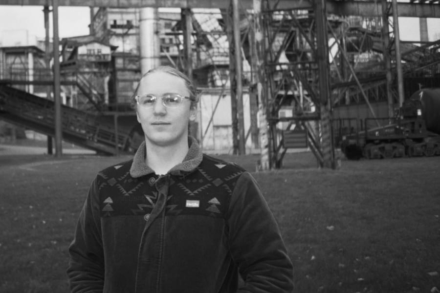

Etwas nicht zu können ist kein Grund es nicht zu tun.

Hi, ich bin Dennis. Als medienschaffende, forschende und politisch aktive Person beschäftige ich mich mit sozialen und ethischen Fragestellungen.
Derzeit setze ich mich als parteiloses Mitglied im Stadtrat von Neustadt an der Aisch für die Erfordernisse einer modernen, resilienten Stadt ein.
Meine Projekte
Mein Underground-Blog Kenopsium umfasst mein Feuilleton, in dem ich sehenswerte Inhalte in Video- Text- und Hypertextform sammle. Mein Portfolio enthält meine Arbeiten auf ResearchGate.


ÜBER MICH
Seit der Jahrtausendwende führt mich meine Laufbahn vom Kreißsaal in den Hörsaal, und anschließend in den Sitzungssaal der Stadt Neustadt a.d.Aisch.
An der Uni spiele ich gerade die Geisteswissenschaften durch, und vertiefe dabei meine Kenntnisse im psychosozialen Bereich. Eine meiner Herzensangelegenheiten
ist die Gestaltung lebenswerter urbaner Räume. Politisch setze ich mich daher, inspiriert von
Jane Jacobs für eine weiterhin resilientes,
lebenswertes und ästhetisches fränkisches Neustadt ein.
Dieses kleine Webprojekt soll all das, was ich gerne öffentlich teilen möchte, an einem Ort zusammenfassen.
Meine Seite ist frei von nicht technisch notwendigen Cookies und
hat daher kein Cookiebanner. Wenn du an neuen Inhalten interessiert bist, dann besuche gerne die Orte (oder Nicht-Orte) innerhalb meines Kompendium-Blogs.
Kurzlebenslauf
-
10/2019 – 09/2023Bachelor of ArtsOtto-Friedrich-Universität, BambergKommunikationswissenschaft, Philosophie und Soziologie
-
2021Zertifizierung zur Projektmanager:inFernUniversität in HagenWeiterbildungslehrgang Projektmanagement
-
Seit 10/2023Master of Arts (laufend)FernUniversität in HagenBildungswissenschaft mit Schwerpunkt Erwachsenenbildung
-
07/2018 – 08/2018Warehouse HelperPUMA Distribution Center, ElsendorfZeitarbeit ahead personal management GmbH & Co. KG
-
05/2020 – heuteMitglied des StadtratesStadt Neustadt an der Aisch
-
11/2020 – 03/2021Radiomoderator:inUniradio FriedaFM, BambergWöchentliche 2-stündige Sendung
-
05/2022 – 01/2024Mitarbeit im ZuhörtelefonNightlines in Europe, BambergStudentisches Zuhörtelefon
-
08/2022Ferien-Caregiver:inSJD - Die Falken, NürnbergJugendbildungsmaßnahme
-
03/2025 – 04/2025Praktikum als Caregiver:inKinder- und Jugendhilfezentrum gGmbH, FürthTeilzeitwohngruppe